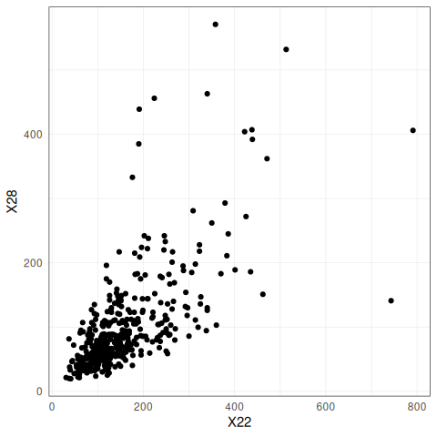
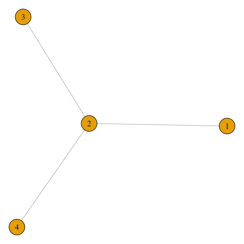
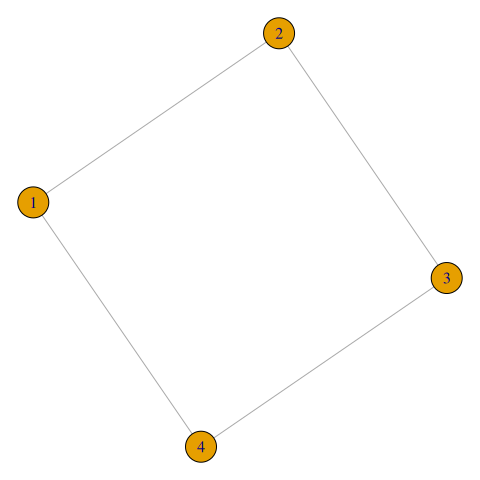
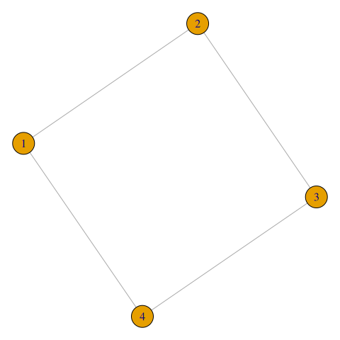
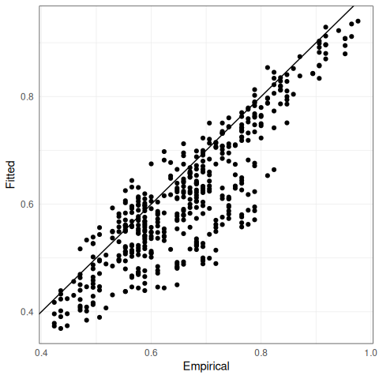
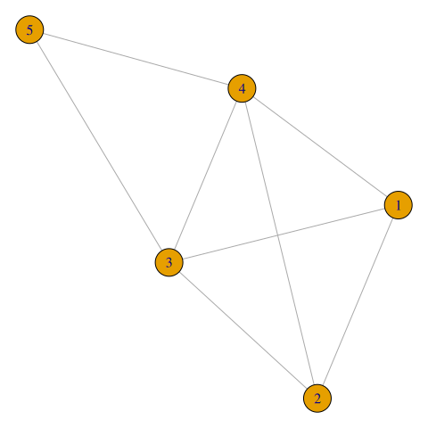
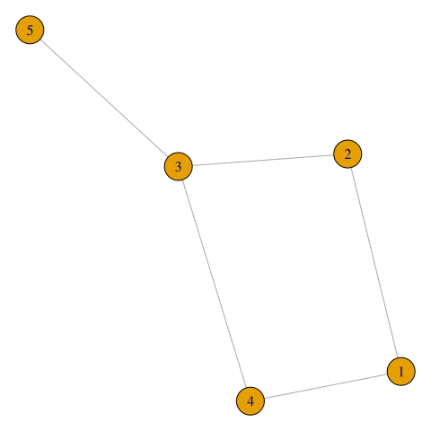
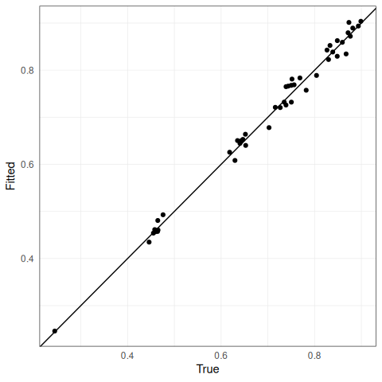

Introduction and application to Danube data
Source:vignettes/applicationDanube.Rmd
applicationDanube.Rmd1 Danube Data
Throughout this document
we use the Danube dataset from Asadi et al. (2015) to illustrate functions and concepts.
The dataset is provided in the package as danube,
see the corresponding help page for details and related functions.
# Plot the physical locations of measuring stations, indicating flow volume by width
plotDanube(useStationVolume = TRUE, useConnectionVolume = TRUE, xyRatio = 1.5)
# Plot only the flow graph
danube_flow <- getDanubeFlowGraph()
plotDanubeIGraph(graph = danube_flow)
# Plot some pairwise scatter plots
plotData <- as_tibble(danube$data_clustered)
ggplot(plotData) + geom_point(aes(x = X1, y = X2))
ggplot(plotData) + geom_point(aes(x = X22, y = X28))
2 Multivariate Pareto distributions
2.1 Definition
The goal is to study the extremal tail of a multivariate random vector \(\mathbf{X} = (X_1,\dots, X_d)\). Here, we are interested only in the extremal dependence and therefore normalize the marginal distributions \(F_j\) of \(X_j\) to standard Pareto distributions by \[\begin{equation} 1 /\{1- F_j(X_j)\}, \quad j=1,\dots, d. \tag{2.1} \end{equation}\] We assume in the sequel that the vector \(\mathbf{X}\) has been normalized to standard Pareto margins.
A multivariate Pareto distribution (MPD) is defined as the limiting distribution the exceedances of \(\mathbf{X}\) over a high threshold, where the multivariate threshold is chosen in terms of the \(l_\infty\)-norm. For any \(u>0\), we define exceedance distribution as \[\begin{equation} \mathbf{X}_u = \mathbf{X} \mid \| \mathbf{X} \|_\infty > u \tag{2.2} \end{equation}\] By sending \(u\to \infty\) and normalizing properly, the random vector \(\mathbf{X}_u\) converges to a limiting distribution \(\mathbf{Y}\) called the MPD: \[ \mathbf{Y} = \lim_{u\to \infty} \mathbf{X}_u /u,\] where the limit is in terms of convergence in distribution. By construction, the distribution of the MPD \(\mathbf{Y}\) is defined on the space \(\mathcal L = \{\mathbf{x} \in [0,\infty)^d : \| \mathbf{x} \|_\infty > 1\}\), and if \(\mathbf{Y}\) possesses a density \(f_{\mathbf{Y}}\), then it is proportional to the so-called exponent measure density \(\lambda\); for details see Engelke and Hitz (2020).
In practice, we use the approximation \(\mathbf{Y} \approx \mathbf{X}_u\) for some large value \(u\), where \(u\) can be chosen as the \(p\)th quantile of the distribution of \(\|\mathbf{X}\|_\infty\).
Given \(n\) oberservations \(\mathbf{X}_1, \dots, \mathbf{X}_n\) of \(\mathbf{X}\), the function data2mpareto() first computes the standardization in (2.1) based on the empirical distribution functions \(\hat F_j\) and then selects the exceedances \(\mathbf{X}_u\) according to (2.2).
X <- danube$data_clustered
Y <- data2mpareto(data = X, p = .8)2.2 Examples
Example 2.1 The extremal logistic distribution with parameter \(\theta\in(0,1)\) induces a multivariate Pareto distribution with density \[\begin{equation} f_{\mathbf{Y}}(\mathbf{y}) = \frac{1}{d^{\theta}} \left(y_1^{-1/\theta}+\dots+y_d^{-1/\theta}\right)^{\theta-d}\prod_{i=1}^{d-1}\left(\frac{i}{\theta}-1\right) \prod_{i=1}^{d} y_i^{-1/\theta-1}, \quad \mathbf{y} \in \mathcal L. \end{equation}\] The parameter \(\theta\) governs the extremal dependence, ranging from complete dependence for \(\theta\to 0\) and independence for \(\theta \to 1\).
The function rmpareto() generates samples from a MPD \(\mathbf{Y}\) based on the exact algorithm described in Engelke and Hitz (2020).
theta <- .5
Ysim <- rmpareto(n = 100, model = "logistic", d = 2, par = theta)Example 2.2 The \(d\)-dimensional Hüsler–Reiss distribution (Hüsler and Reiss, 1989) is parameterized by the variogram matrix \(\Gamma = \{\Gamma_{ij}\}_{1\leq i,j\leq d}\). The corresponding density of the exponent measure can be written for any \(k\in\{1,\dots, d\}\) as \[\begin{equation} \lambda(\mathbf{y}) = y_k^{-2}\prod_{i\neq k} y_i^{-1} \phi_{d-1}\left(\mathbf{\tilde y}_{\setminus k}; \Sigma^{(k)}\right), \quad \mathbf{y} \in \mathcal L, \tag{2.3} \end{equation}\] where \(\phi_p(\cdot; \Sigma)\) is the density of a centred \(p\)-dimensional normal distribution with covariance matrix \(\Sigma\), \(\mathbf{\tilde y} = \{\log(y_i/y_k) + \Gamma_{ik}/2\}_{i=1,\dots, d}\) and \[\begin{equation}\label{sigma_k} \Sigma^{(k)} =\frac{1}{2} \{\Gamma_{ik}+\Gamma_{jk}-\Gamma_{ij}\}_{i,j\neq k} \in\mathbb R^{(d-1)\times (d-1)}. \tag{2.4} \end{equation}\] The matrix \(\Sigma^{(k)}\) is positive definite and will play an important role in the theory of extremal graphical models. The representation of the density in (2.3) seems to depend on the choice of \(k\), but, in fact, the value of the right-hand side of this equation is independent of \(k\). The Hüsler–Reiss multivariate Pareto distribution has density \(f_{\mathbf{Y}}(\mathbf{y}) \propto \lambda(\mathbf{y})\) and the strength of dependence between the \(i\)th and \(j\)th component is parameterized by \(\Gamma_{ij}\), ranging from complete dependence for \(\Gamma_{ij} \to 0\) and independence for \(\Gamma_{ij} \to \infty\).
The extension of Hüsler–Reiss distributions to random fields are Brown–Resnick processes (Kabluchko et al., 2009), which are widely used models for spatial extremes.
Note that we can also generate samples from the corresponding max-stable distribution with the function rmstable(), following the exact algorithm in Dombry et al. (2016).
2.3 Measures of extremal dependence
2.3.1 Extremal correlation
The extremal correlation \(\chi_{ij}\in [0,1]\) measures the dependence between the largest values of the random variables \(X_i\) and \(X_j\). It is defined as \[\begin{equation}\label{EC} \chi_{ij} = \lim_{p\to 1} \chi_{ij}(p) = \lim_{p\to 1} \mathbb P\left\{F_i(X_i) > p\mid F_j(X_j) > p \right\}, \end{equation}\] where the boundary cases \(0\) and \(1\) correspond to asymptotic independence and complete dependence, respectively.
For \(n\) observations \(X_1,\dots, X_n\) of the \(d\)-dimensional vector \(X\), we can empirically estimate the \(d\times d\) matrix of all pairwise extremal correlations for a fixed threshold \(p\) close to 1.
chi_hat <- emp_chi(data = X, p = .8)In this and other functions, the default argument p = NULL implies that the data is already expected to be on MPD scale, and no thresholding is performed.
For the danube data, we may therefore directly use \(\mathbf{Y}\) instead of \(\mathbf{X}\):
chi_hat <- emp_chi(data = Y)Example 2.3 For the Hüsler–Reiss distribution with parameter matrix \(\Gamma = \{\Gamma_{ij}\}_{1\leq i,j\leq d}\), the extremal correlation is given by
\[ \chi_{ij} = 2 - 2 \Phi(\sqrt{\Gamma_{ij}}/2),\]
where \(\Phi\) is the standard normal distribution function. We can use the functions Gamma2chi() and chi2Gamma() to switch between the two coefficients.
2.3.2 Extremal variogram
There exist several other summary statistics for extremal dependence. The extremal variogram is introduced in Engelke and Volgushev (2022) and turns out to be particularly useful for inference of extremal graphical models discussed below.
For any root node \(k\in V\), the pre-asymptotic extremal variogram is defined as the matrix \(\Gamma^{(k)}\) with entries
\[\begin{equation*}
\Gamma_{ij}^{(k)}(p) = \mathop{\mathrm{Var}}\left[\log\{1 - F_i(X_{i})\}- \log\{1 - F_j(X_j)\} \mid F_k(X_k) > p\right], \quad i,j\in V,
\end{equation*}\]
whenever right-hand side exists. Note that \(-\log\{1 - F_i(X_{i})\}\) transforms \(X_i\) to a standard exponential distribution, such that \(\Gamma^{(k)}\) is simply the variogram matrix of \(\mathbf{X}\) on exponential scale, conditioned on the \(k\)th variable being large.
The limit as \(p\to 1\) is called the extremal variogram and can be expressed in terms of the MPD \(\mathbf{Y}\):
\[\begin{equation*}
\Gamma_{ij}^{(k)} = \lim_{p\to 1} \Gamma_{ij}^{(k)}(p) = \mathop{\mathrm{Var}}\left\{ \log Y^k_{i} - \log Y^k_j \mid Y_k > 1 \right\}, \quad i,j\in V.
\end{equation*}\]
Weak/strong extremal dependence is indicated by large/small values of the extremal variogram, respectively. The function emp_vario() estimates the (pre-asymptotic) extremal variogram, for instance for \(k=1\).
Gamma_1_hat <- emp_vario(data = X, k = 1, p = 0.8)In general, the matrices \(\Gamma^{(k)}\) can be different for \(k \in V\), but for example for the Hüsler–Reiss distribution, they all coincide.
Example 2.4 For the Hüsler–Reiss distribution with parameter matrix \(\Gamma\), the extremal variogram matrices satisfy \[ \Gamma = \Gamma^{(1)} = \dots = \Gamma^{(d)}.\]
In this case it makes sense to estimate the extremal variogram \(\hat \Gamma\) as the average of the estimators \(\hat \Gamma^{(k)}\):
3 Extremal graphical models
Let \(G=(V,E)\) be an undirected graph with index set \(V = \{1,\dots, d\}\) and edges \(E \subset V \times V\). The figure below shows examples of different graphical structures: a tree, a decomposable graph and a non-decomposable graph. Engelke and Hitz (2020) introduce a new notion of extremal conditional independence for MPDs, denoted by \(\perp_e\). They define an extremal graphical model on \(G\) as a MPD \(Y = (Y_j : j\in V)\) that satisfies the pairwise Markov property \[ Y_i \perp_e Y_j \mid Y_{\setminus \{i,j\}}, \quad \text{ if } (i,j)\notin E,\] that is, \(Y_i\) and \(Y_j\) are conditionally independent in the extremal sense \(\perp_e\) given all other nodes whenever there is no edge between \(i\) and \(j\) in \(G\).
If the MPD possesses a density \(f_{\mathbf{Y}}\), then the graph \(G\) has to be connected. Engelke and Hitz (2020) then show a Hammersley–Clifford theorem stating that for an extremal graphical model on a decomposable graph \(G\), the density \(f_{\mathbf{Y}}\) factorizes into the marginal density on the cliques.
# A tree graph, a decomposable graph, and a non-decomposable (cycle) graph
plot(graph_from_literal(1--2--3, 2--4))
plot(graph_from_literal(1--2--3--1, 2--4))
plot(graph_from_literal(1--2--3--4--1)) 

3.1 Trees
A tree \(T = (V,E)\) is a particularly simple type of graph, which is connected and does not have cycles. This implies that there are exactly \(|E| = d-1\) edges. The Hammersley–Clifford theorem shown in Engelke and Hitz (2020) yields that the density of an extremal tree model \(\mathbf{Y}\) on the tree \(T= (V,E)\) factorizes into \[\begin{equation} f_{\mathbf{Y}}(\mathbf{y}) \propto \prod_{\{i,j\}\in E} {\lambda_{ij}(y_i,y_j) \over y_i^{-2} y_j^{-2}} \prod_{i\in V} y_i^{-2}, \tag{3.1} \end{equation}\] where \(\lambda_{ij}\) are the bivariate marginals of the exponent measure density \(\lambda\) corresponding to \(\mathbf{Y}\). The \(d\)-dimensional density of the MPD is therefore reduced to bivariate interactions only.
For extremal graphical models on trees, the extremal variograms \(\Gamma^{(k)}\), \(k \in V\), are very natural since they define a so-called additive tree metric, that is,
\[\begin{equation}
\Gamma_{ij}^{(k)} = \sum_{(s,t) \in \text{ph}(ij)} \Gamma^{(k)}_{st}, \tag{3.2}
\end{equation}\]
where \(\text{ph}(ij)\) denotes the path between node \(i\) and \(j\) on the tree \(T\).
3.1.1 Simulation
By representation (3.1) we can specify any bivariate models \(\lambda_{ij}\) for \((i,j) \in E\) and combine them to a valid tree model. For instance, if we use bivariate Hüsler–Reiss distributions on all edges of the tree \(T\), the resulting \(d\)-dimensional tree model is again Hüsler–Reiss and its parameter matrix \(\Gamma\) is implied by (3.2). If we use bivariate logistic distributions on all edges, the resulting extremal tree model is not a \(d\)-dimensional logistic model, but a more flexible model with \(d-1\) parameters.
The function rmpareto_tree() generates samples from an extremal tree model \(\mathbf{Y}\).
set.seed(42)
my_model <- generate_random_model(d = 4, graph_type = "tree")
Ysim <- rmpareto_tree(
n = 100,
model = "HR",
tree = my_model$graph,
par = my_model$Gamma
)
theta_vec <- c(.2, .8, .3)
Ysim <- rmpareto_tree(
n = 100,
model = "logistic",
tree = my_model$graph,
par = theta_vec
)Note that we can also generate samples from the corresponding max-stable distribution with the function rmstable_tree().
3.1.2 Estimation
For a given tree \(T= (V,E)\) and a parametric model \(\{f_{\mathbf{Y}}(\mathbf{y}; \theta): \theta \in \Theta\}\) of MPDs on the tree \(T\), estimation of the model parameters is fairly straight-forward. If \(\theta = \{ \theta_{ij}: (i,j) \in E\}\) consists of one parameter per edge, then thanks to the factorization (3.1) we may fit each parameter \(\theta_{ij}\) separately. This can be done by (censored) maximum likelihood methods, or by other methods such as M-estimation.
If provided with a tree and data, the function fmpareto_graph_HR() estimates the \(d-1\) parameters of a Hüsler–Reiss model on that tree. As an example, we fit an extremal tree model to the (undirected) tree resulting from the flow connections in the danube() data set and compare the fitted with the empirical extremal coefficients.
# Utility function to plot fitted parameters against true/empirical ones
plot_fitted_params <- function(G0, G1, xlab = 'True', ylab = 'Fitted'){
return(
ggplot()
+ geom_point(aes(
x = G0[upper.tri(G0)],
y = G1[upper.tri(G1)]
))
+ geom_abline(slope = 1, intercept = 0)
+ xlab(xlab)
+ ylab(ylab)
)
}
# Get flow graph from package
flow_graph <- getDanubeFlowGraph()
# Fit parameter matrix with this graph structure
flow_Gamma <- fmpareto_graph_HR(data = Y, graph = flow_graph)
# Compute likelihood/ICs and plot parameters
flow_loglik <- loglik_HR(
data = Y,
Gamma = flow_Gamma,
graph = flow_graph
)
plot_fitted_params(chi_hat, Gamma2chi(flow_Gamma), xlab = 'Empirical')3.1.3 Structure learning
In practice, the underlying conditional independence tree \(T = (V,E)\) is usually unknown and has to be estimated in a data-driven way. For extremal tree models, it turns out that this can be done efficiently in a completely non-parametric way; see Engelke and Volgushev (2022) for details.
The method is based on the notion of a minimum spanning tree. For a set of symmetric weights \(\rho_{ij} > 0\) associated with any pair of nodes \(i,j\in V\), \(i\neq j\), the latter is defined as the tree structure \[\begin{align}\label{Tmin} T_{\mathop{\mathrm{mst}}} = \mathop{\mathrm{arg\,min}}_{T' = (V,E)} \sum_{(i,j)\in E} \rho_{ij}, \end{align}\] that minimizes the sum of distances on that tree.
Engelke and Volgushev (2022) show that if \(\mathbf{Y}\) is an extremal graphical model on an unknown tree \(T\), then the minimum spanning tree with the extremal variogram \(\rho_{ij} = \Gamma_{ij}^{(k)}\) as weights is unique and satisfies \(T_{\mathop{\mathrm{mst}}} = T\). Using empirical estimates \(\hat \Gamma_{ij}^{(k)}\) as weights, we can thus consistently recover the underlying tree structure in a fully non-parametric way.
In fact, taking the average of all \(\hat \Gamma^{(k)}\), \(k \in V\), and using this as weights \(\rho_{ij} = \hat \Gamma_{ij}\) makes better use of the data and usually improves the performance of structure estimation significantly. Engelke and Volgushev (2022) further show that the empirical extremal correlation \(\rho_{ij} = \hat \chi_{ij}\) may also be used for consistent tree recovery, but the performance is typically inferior to extremal variogram based algorithms.
The function emst() estimates the extremal tree structure by a minimum spanning tree algorithm based on the different summary statistics for extremal dependence. It provides the estimated tree and the implied extremal variogram matrix through (3.2).
# Fit tree grpah to the data
emst_fit <- emst(data = Y, method = "vario")
# Compute likelihood/ICs, and plot fitted graph, parameters
loglik_emst <- loglik_HR(
data = Y,
Gamma = emst_fit$Gamma,
graph = emst_fit$graph
)
plotDanubeIGraph(graph = emst_fit$graph)
plot_fitted_params(chi_hat, Gamma2chi(emst_fit$Gamma), xlab = 'Empirical')
3.2 Huesler–Reiss graphical models
The Hüsler–Reiss Pareto distribution \(\mathbf{Y}\) is parametrized by the variogram matrix \(\Gamma\). Using the linear transformation (2.4), we obtain the covariance matrix \(\Sigma^{(k)}\) for \(k\in V\). The inverse, called a precision matrix, is denoted by \(\Theta^{(k)}\). Following Hentschel et al. (2022), these \((d-1) \times (d-1)\) matrices can be combined into the \(d \times d\) precision matrix \(\Theta\) by \[\begin{equation*} \Theta_{ij} = \Theta^{(k)}_{ij} \text{ for some } k \neq i,j. \end{equation*}\] Engelke and Hitz (2020) show that this matrix is well-defined and encodes extremal conditional independence as zeros on the off-diagonal: \[\begin{equation*} Y_i\perp_e Y_j\mid \mathbf{Y}_{V\setminus \{i,j\}} \quad \iff \quad \Theta_{ij}= 0, \quad i,j \in V. \end{equation*}\]
3.2.1 Transformations
While the Hüsler–Reiss distribution is parameterized by the variogram matrix \(\Gamma\),
other objects such as \(\Theta^{(k)}\), \(\Sigma^{(k)}\), \(\Theta\),
and its Moore–Penrose inverse \(\Sigma := \Theta^+\) are often required,
for instance, to identify the extremal graphical structure.
The functions Gamma2Sigma(), Sigma2Gamma(), Gamma2Theta(), etc. perform these transformations.
Note that all of these function are bijections.
The functions Gamma2graph(), Theta2graph() etc. create an igraph::graph() object,
which represents the corresponding extremal graph structure.
Gamma <- cbind(
c(0, 1.5, 1.5, 2),
c(1.5, 0, 2, 1.5),
c(1.5, 2, 0, 1.5),
c(2, 1.5, 1.5, 0)
)
Gamma2Sigma(Gamma, k = 1)
#> [,1] [,2] [,3]
#> [1,] 1.5 0.5 1
#> [2,] 0.5 1.5 1
#> [3,] 1.0 1.0 2
Gamma2Theta(Gamma)
#> [,1] [,2] [,3] [,4]
#> [1,] 1.0 -0.5 -0.5 0.0
#> [2,] -0.5 1.0 0.0 -0.5
#> [3,] -0.5 0.0 1.0 -0.5
#> [4,] 0.0 -0.5 -0.5 1.0
Gamma2graph(Gamma)
#> IGRAPH abda55b U--- 4 4 --
#> + edges from abda55b:
#> [1] 1--2 1--3 2--4 3--43.2.2 Completion of \(\Gamma\)
For Hüsler–Reiss graphical models it suffices to specify the graph structure \(G = (V,E)\) on all entries of the parameter matrix \(\Gamma_{ij}\) for \((i,j) \in E\). The remaining entries of the matrix \(\Gamma\) are then implied by the graph structure (Hentschel et al., 2022).
The function complete_Gamma() takes as inputs a partially specified \(\Gamma\) matrix and the corresponding graph structure,
and completes the \(\Gamma\) matrix.
The mathematical theory for completion is different depending on whether the graph is decomposable or non-decomposable.
The simplest case is a tree, where the entries \(\Gamma_{ij}\) for \((i,j) \notin E\) can be easily obtained from the additive tree metric property (3.2).
set.seed(42)
my_tree <- generate_random_tree(d = 4)
Gamma_vec <- c(.5, 1.4, .8)
Gamma_comp <- complete_Gamma(Gamma = Gamma_vec, graph = my_tree)
print(Gamma_comp)
#> [,1] [,2] [,3] [,4]
#> [1,] 0.0 0.5 1.9 1.3
#> [2,] 0.5 0.0 1.4 0.8
#> [3,] 1.9 1.4 0.0 2.2
#> [4,] 1.3 0.8 2.2 0.0
plot(Gamma2graph(Gamma_comp))This also works for more general decomposable graphs, where the matrix \(\Gamma\) has to be specified on all cliques. For decomposable graphs, the graph structure can also be implied by \(\Gamma_{ij} = \text{NA}\) for \((i,j)\notin E\).
G <- rbind(
c(0, 5, 7, 6, NA),
c(5, 0, 14, 15, NA),
c(7, 14, 0, 5, 5),
c(6, 15, 5, 0, 6),
c(NA, NA, 5, 6, 0)
)
Gamma_comp <- complete_Gamma(Gamma = G)
plot(Gamma2graph(Gamma_comp))
For non-decomposable graphs, a valid \(\Gamma\) matrix and an undirected, connected graph has to be provided.
set.seed(42)
G <- rbind(
c(0, 5, 7, 6, 6),
c(5, 0, 14, 15, 13),
c(7, 14, 0, 5, 5),
c(6, 15, 5, 0, 6),
c(6, 13, 5, 6, 0)
)
my_graph <- generate_random_connected_graph(d = 5, m = 5)
Gamma_comp <- complete_Gamma(Gamma = G, graph = my_graph)
plot(Gamma2graph(Gamma_comp))
3.2.3 Estimation
Let us first suppose that a connected graph \(G\) is given.
For some data set, the function fmpareto_graph_HR() fits a Hüsler–Reiss graphical model on the graph \(G\).
If the graph is decomposable, then the parameters of each clique can be fitted separately and combined together to a full \(\Gamma\) matrix. If the cliques are small enough, then (censored) maximum likelihood estimation is feasible, otherwise the empirical extremal variogram is used.
Combining the clique estimates relies on the same principle as in the complete_Gamma() function, but with some care required to ensure that the \(\Gamma_{ij}\) estimates are consistent if \((i,j)\) belongs to a separator set between two or more cliques.
set.seed(42)
d <- 10
my_model <- generate_random_model(d = d, graph_type = "decomposable")
plot(my_model$graph)
Ysim <- rmpareto(n = 100, d = d, model = "HR", par = my_model$Gamma)
my_fit <- fmpareto_graph_HR(data = Ysim, graph = my_model$graph, p = NULL)
plot_fitted_params(Gamma2chi(my_model$Gamma), Gamma2chi(my_fit))
If the graph \(G\) is non-decomposable, then the empirical extremal variogram is first computed and then it is fitted to graph structure of \(G\) using the function complete_Gamma().
set.seed(1)
d <- 20
my_model <- generate_random_model(d = d, graph_type = "general")
plot(my_model$graph)
Ysim <- rmpareto(n = 100, d = d, model = "HR", par = my_model$Gamma)
my_fit <- fmpareto_graph_HR(data = Ysim, graph = my_model$graph, p = NULL, method = "vario")
plot_fitted_params(Gamma2chi(my_model$Gamma), Gamma2chi(my_fit))
3.2.4 General structure learning
For structure learning of more general, possibly non-decomposable graphs, we can use the eglearn method.
Given an estimate \(\widehat \Gamma\) of the parameter matrix, e.g.,
obtained by emp_vario(), we compute the corresponding matrices \(\widehat \Sigma^{(k)}\) through the function Gamma2Sigma().
In order to enforce sparsity, we compute the \(\ell_1\)-penalized precision matrices for each \(k\in V\).
For a tuning parameter \(\rho\geq 0\) and choice of \(k\), the estimated \((d-1) \times (d-1)\) precision matrix is
\[\begin{align*}
\widehat \Theta^{(k)}_{\rho} = \underset{{\Theta} \succeq 0}{\mathop{\mathrm{arg\,max}}} \,\, \log \det{\Theta}-\operatorname{tr}(\widehat \Sigma^{(k)}\Theta) -\rho \sum_{\substack{i\neq j \\ i,j\neq k}} \left|\Theta_{ij}\right|.
\end{align*}\]
Since we run \(d\) different graphical lasso algorithms and the \(k\)th only enforces sparsity for all edges that do not involve the \(k\)th node, we determine the estimated graph structure \(\widehat{G}_\rho = (\widehat E_\rho,V)\) by majority vote:
\[ (i,j) \in \widehat E_\rho \quad \Leftrightarrow \quad \frac1{d-2} \# \left\{k \in V \setminus \{i,j\}: \right(\widehat\Theta^{(k)}_\rho \left)_{ij} \neq 0 \right\} \geq 1/2.\]
The best parameter \(\rho\) can be chosen for instance as the minimizer of the BIC of the resulting models.
The extremal graphical lasso is implemented in the eglearn() function.
It returns the (sequence) of estimated graphs and, if desired, the corresponding \(\widehat \Gamma_\rho\) estimates.
# Run eglearn for a suitable list of penalization parameters
rholist <- seq(0, 0.1, length.out = 11)
eglearn_fit <- eglearn(
data = Y,
rholist = rholist,
complete_Gamma = TRUE
)
# Compute the corresponding likelihoods/ICs
logliks_eglearn <- sapply(
seq_along(rholist),
FUN = function(j) {
Gamma <- eglearn_fit$Gamma[[j]]
if(is.null(Gamma)) return(c(NA, NA, NA))
loglik_HR(
data = Y,
Gamma = Gamma,
graph = eglearn_fit$graph[[j]]
)
}
)
# Plot the BIC vs rho/number of edges
ggplot(mapping = aes(x = rholist, y = logliks_eglearn['bic', ])) +
geom_line() +
geom_point(shape = 21, size = 3, stroke = 1, fill = "white") +
geom_hline(aes(yintercept = flow_loglik['bic']), lty = "dashed") +
geom_hline(aes(yintercept = loglik_emst['bic']), lty = "dotted") +
xlab("rho") +
ylab("BIC") +
scale_x_continuous(
breaks = rholist,
labels = round(rholist, 3),
sec.axis = sec_axis(
trans = ~., breaks = rholist,
labels = sapply(eglearn_fit$graph, igraph::gsize),
name = "Number of edges"
)
)
# Compare fitted chi to empirical one
best_index <- which.min(logliks_eglearn['bic', ])
best_Gamma <- eglearn_fit$Gamma[[best_index]]
best_graph <- eglearn_fit$graph[[best_index]]
plotDanubeIGraph(graph = best_graph)
plot_fitted_params(chi_hat, Gamma2chi(best_Gamma), xlab='Empirical')